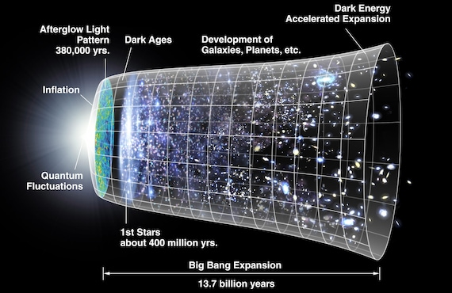

Dal greco antico κόσμος?, kósmos, "ordine" e λόγος, lógos,
"discorso"
Nasce come branca della filosofia, interessandosi dello spazio,
del tempo e della materia
Inizialmente esclude ogni domanda su origine e fine del cosmo, a
cui cercano risposta le Cosmogonie fisiche e religiose
Breve storia della Cosmologia
Primi cenni in epoca assiro babilonese
Epoca classica: il sistema geocentrico, l'universo perfetto e
immutabile, increato ed eterno
La rivelazione ebraica e il creazionismo. Il problema del tempo
Breve storia della Cosmologia
La rivoluzione copernicana, la gravitazione universale
La scoperta della Via Lattea e delle altre galassie. Da Hershel
a Hubble
La nascita della Cosmologia moderna: Einstein, Fridman, Lemaitre
e le conferme di Hubble
La storia dell'Universo

Era di Plank
Da 0 a 10-44 s
Le 4 interazioni fondamentali (elettromagnetica, debole, forte e gravità) sono di uguale intensità e probabilmente unificate
Universo estremamente caldo e denso
Date le forze in gioco e le distanze inferiori alla lunghezza di Plank (1.616x10-35 m) non funziona più la relatività di Einstein, ma esclusivamente la meccanica quantistica
Era di grande unificazione
1030 K
10-43 s
Nasce lo spazio-tempo
Era dell'inflazione
10-35 s
Diametro dell'universo 10-26 m
1027 K
Rapida e drastica espansione dell'universo
Si iniziano a formare le prime particelle a coppie (particella-antiparticella)
Era elettrodebole
Da 10 m a 1012 m
Da 1027 K a 1015 K
Fino a 10-9 s
Viene completata la suddivisione delle interazioni e continuano le formazioni delle particelle
Era degli adroni
10-6 s
1030 K
Diametro dell'universo 1014 m
Si formano i primi adroni, tra cui protoni e neutroni
Era dei leptoni
10-4 s
1012 K
Dopo 1 secondo 1012 K
Dopo 100 secondi 1011 K
Si formano i primi leptoni, tra cui elettroni, muoni e tau
Era della nucleosintesi
100 s
Più di 100 miliardi di km
108 K
La maggior parte dei neutroni decadono in protoni
Si formano i primi nuclei di elio-4 e deuterio
La storia dell'Universo - parte 1
Fase della grande unificazione: il punto 0
Fase dell'inflazione: il bang
Fase elettrodebole: si creano le principali interazioni e le prime particelle subatomiche